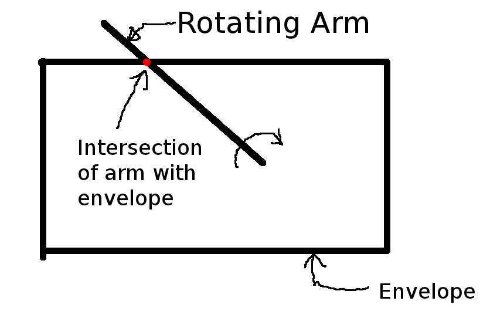

Playing Around With Guilloche Patterns
What went wrong?
Consider the following picture:

The arm rotates at a constant angular velocity.
Is the speed at which the intersection of the arm and the envelope travels a constant?
No. The farther out on the radius of the arm the intersection is, the faster it travels. The speed along the envelope path is not constant.
However, our generalized polygon code maps the period to points along the envelope as if the speed were constant. This is the source of the problem.
How to fix this?